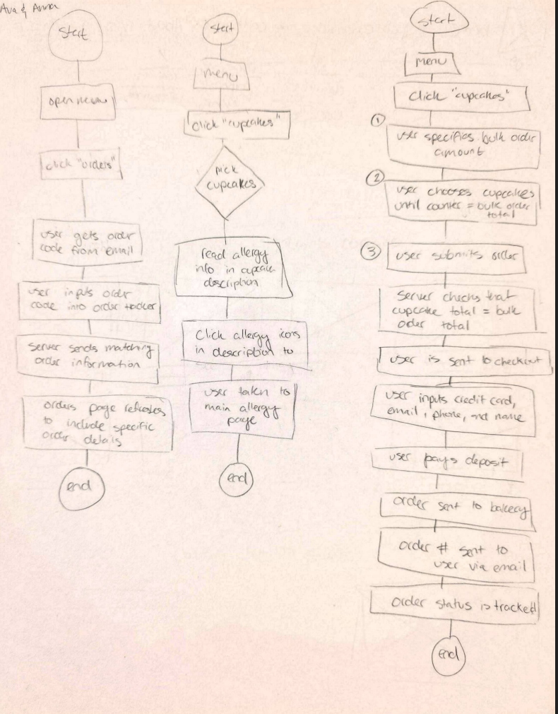
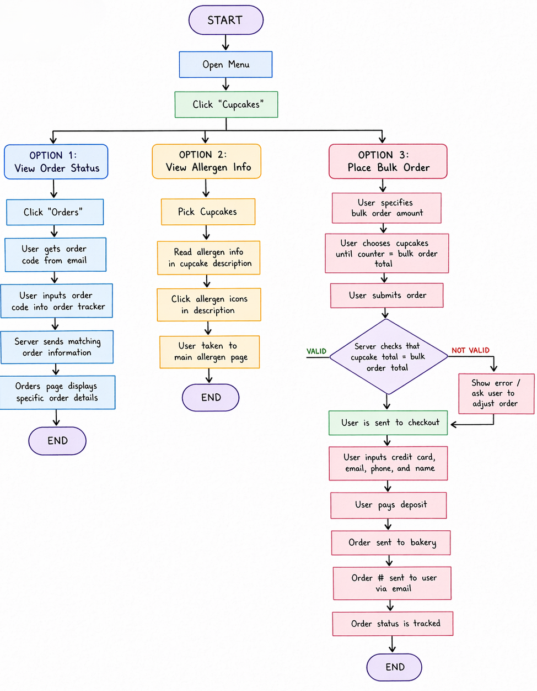
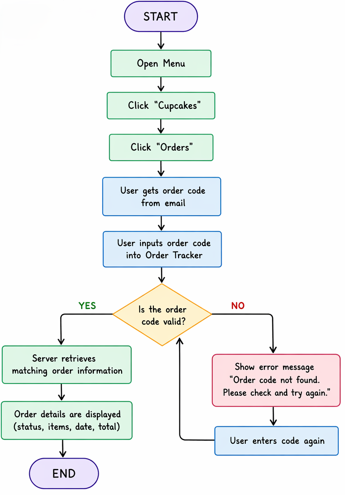
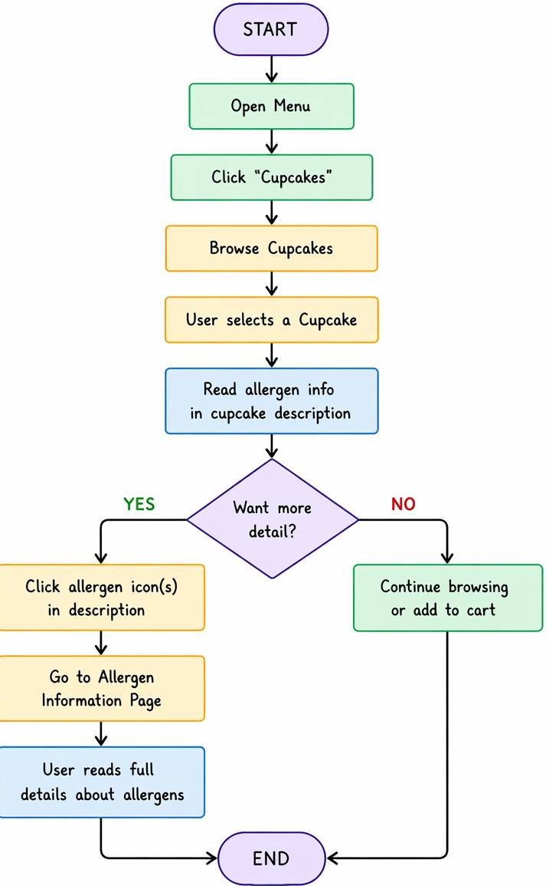
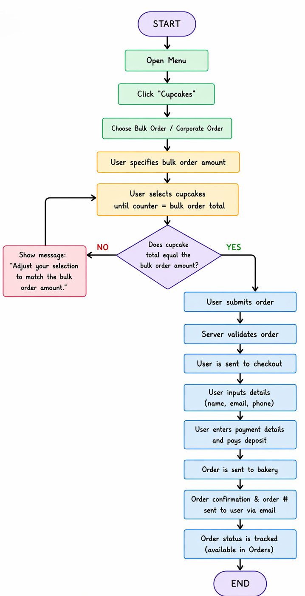
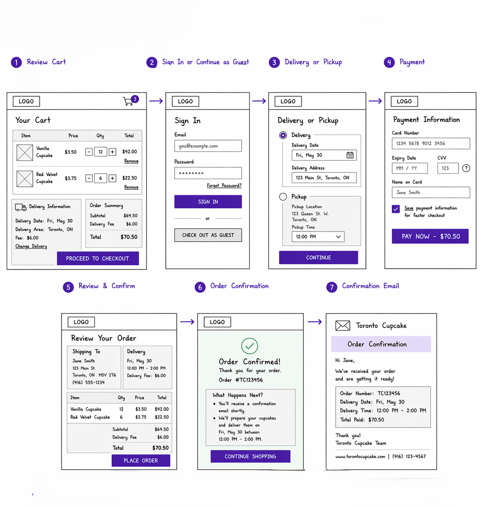
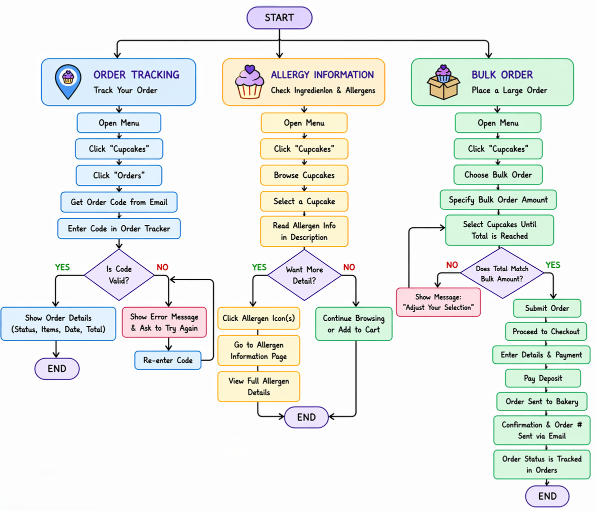

Wireframe and Design of the Website 🎨
Overview

This section describes the wireframe and design concepts used for the cupcake website. Although I am not currently enrolled in the ACIT 2811 UX/UI course, the wireframes for this project were created by my team members and peers, Anna and Ava. Their work helped guide the structure, layout, and user flow of the website.
Note
The wireframes are hand-drawn flowcharts that represent how users interact with the website and complete key tasks.
Wireframe Description

The design includes three main flowcharts, each representing an important user process on the website. These diagrams focus on how users navigate the system, access information, and complete actions such as ordering and tracking.
1. Order Tracking Flow

The first flowchart illustrates how a user tracks an order. The process begins when the user opens the menu and navigates to the Orders section. From there, the user receives an order code via email after placing an order. The user enters this code into the order tracker, and the server retrieves the corresponding order details. These details are then displayed on the page for the user to review.
Tip
This flow ensures that users can easily check the status of their order at any time.
2. Allergy Information Flow

The second flowchart focuses on how users check allergy information. The user navigates to the Cupcakes section and selects a specific cupcake. Within the product description, allergy information is provided, along with clickable allergy icons. These icons direct the user to a main allergy information page where more detailed information is available.
Warning
Allergy information must be clearly visible and easy to access, as users actively look for this information before making a purchase.
3. Bulk Ordering Flow

The third and most detailed flowchart represents the bulk ordering process. In this flow, the user begins by selecting cupcakes and specifying the quantity for a bulk order. After submitting their selections, the user proceeds to checkout.

At this stage, the server verifies the order, and the user is prompted to enter payment and contact information. The user then pays a deposit, and the order is sent to the bakery for processing. Once completed, the user receives an order number via email, which can later be used to track the order status.
Note
This flow covers the complete ordering journey, from product selection to order confirmation and tracking.
Summary

Together, these wireframes represent the core user workflows of the website, including browsing products, checking allergy information, placing orders, and tracking purchases. They provide a clear foundation for designing a user-friendly interface and improving the overall user experience.
Warning
While the flows are well-structured, it is important to ensure that each step is clearly communicated in the final design to avoid user confusion.